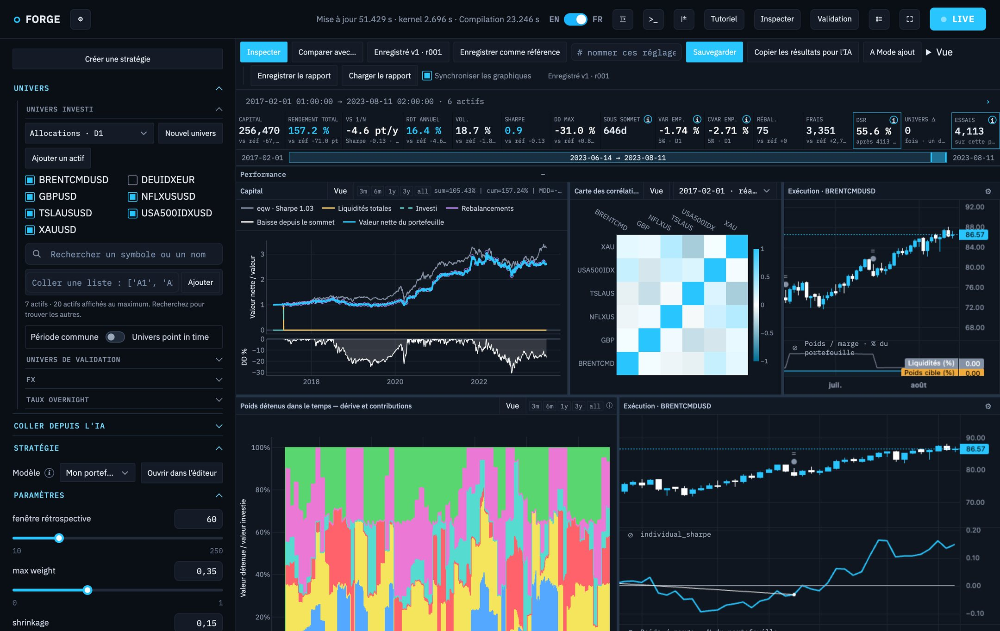
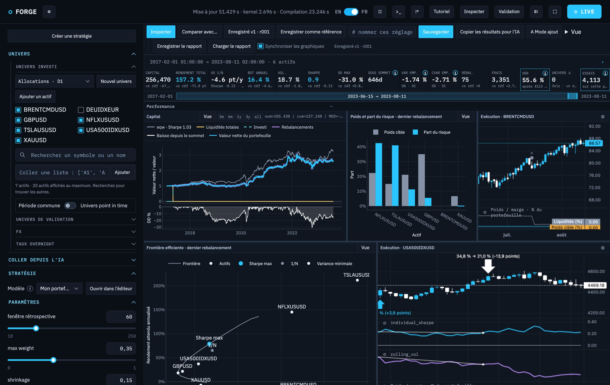
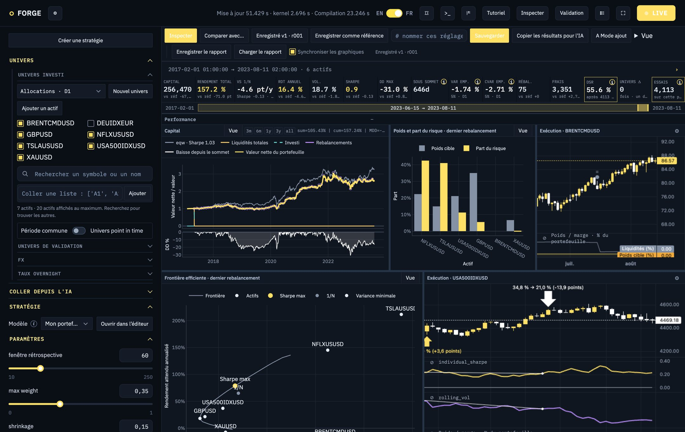
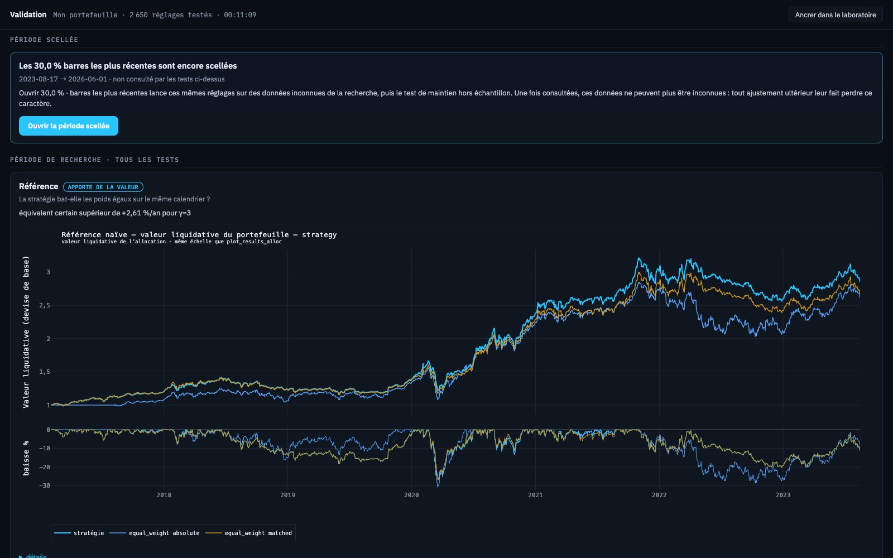

allocation lab
The power of quantitative investment, within your reach.
Plan and build your future investments, compare your investment options and test your own mechanisms for protecting capital and securing gains, without technical complexity limiting your ambitions.
The concept
Define the logic. FORGE handles execution.
With or without programming knowledge, FORGE gives you an environment specifically designed for creating, integrating and developing your own investment strategies, with help from your AI or by writing the Python code yourself.
Focus all your energy on your investment logic. FORGE automatically handles the execution of your simulations. The engine performs the calculations in milliseconds in this demonstration, following fully documented rules.
Your investment logic
- Objectives
- Convictions
- Hypotheses
FORGE development environment
Your custom tools
FORGE ENGINE
Simulation infrastructure
Your analysis
- Performance
- Risk
- Robustness
An open, customisable environment
Your strategy. Your tools. Your environment.
FORGE imposes neither an investment method nor a predefined analysis environment. From simple portfolio allocation to the most sophisticated algorithmic strategies, create your own indicators, charts and simulation parameters.
Organise your workspace around your investment logic and let it evolve as your research progresses.
Your data, your sources. Connect FORGE to your data provider or import your CSV files directly. Only OHLCV data is currently supported.



Before deployment · test 1 of 12
The locked period, opened only once.
Research ends in August 2023. The remainder stays sealed until you open it, to see how the strategy performs on data it has never seen.


Out of sample: 21.9 % per year, 13.7 % volatility, −12.3 % maximum drawdown. 85 % of the advantage over 1/N is retained.
Before deployment
Good performance is not enough. 12 robustness tests.
A strategy that performed well in the past may not do so under different conditions.
FORGE runs it through 12 robustness tests, including out-of-sample and cross-asset tests, Monte Carlo simulations, stress tests and parameter sensitivity analysis.
Thousands of simulations in seconds to test your strategy before the markets do.
Here are two:
Before deployment · test 2 of 12
The same allocation, on 80 unseen baskets.
Without changing any parameters, FORGE tests the allocation on 80 randomly drawn baskets from an asset universe reserved for validation.
Each result is compared with its own 1/N to determine whether performance comes from the allocation method or simply the choice of assets.
The editor
Every strategy is code, readable and editable.
Your AI’s output goes straight into the FORGE editor, organised as a tree: indicators, allocator, parameters, charts.
Designed to make programming easier, this environment lets you freely develop, modify and test your ideas, with an AI or directly in code. Every change can be simulated immediately.
DEVELOPMENT OUTLOOK
Infrastructure for agentic financial research.
FORGE already has an API that allows LLMs to interact directly with the framework and carry out their own research autonomously.
Far from being a black box, the framework keeps strategy code fully accessible and follows documented execution rules.
Every trial is accounted for, every change is versioned, and the use of out-of-sample data is monitored. Simulations incorporate transaction costs, slippage and execution constraints.
Proposed agent architecture
Define the framework
LLM
Model independent of FORGE
API
FORGE- Commands
- Data
- Results
FORGE
Execution, traceability and validation
Execution
Research control
Iterative research loop
Proposed agent architecture based on the existing API and infrastructure.
Independent project
A starting point.
I designed and developed FORGE to explore a conviction: analytical tools should adapt to the needs of asset managers, rather than the other way round.
From financial modelling and strategy simulation to automation and risk analysis, I develop solutions for complex, specialised problems.
I am looking for a six-month internship starting in January 2027, in an asset management or financial engineering team.
Next: under the hoodFound: outperforms 1/N on all four measures
Next: the 12 validation tests →